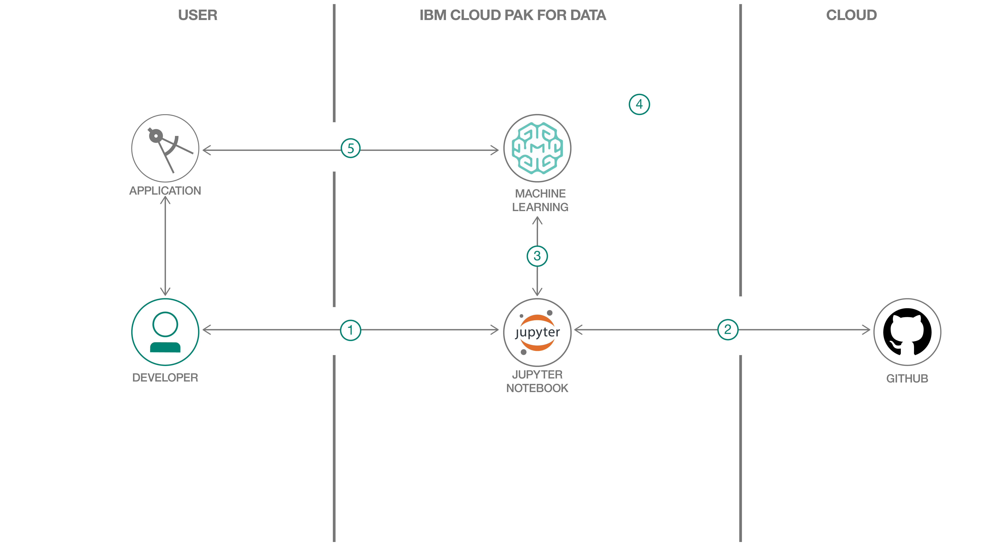

Solve a business problem and predict loan default using a German credit risk dataset.
Summary¶
In this developer code pattern, we'll use IBM Cloud Pak for Data to go through the whole data science pipeline to solve a business problem and predict loan default using a German credit risk dataset. IBM Cloud Pak for Data is an interactive, collaborative, cloud-based environment. It can help data scientists, developers, and others interested in data science use tools to collaborate, share, and gather insights from their data -- as well as build and deploy machine learning, and deep learning models.
Description¶
Predicting loan default is integral to many financial and other related businesses. For this use case, the machine learning model we are building is a classification model that will return a prediction of 'Risk' (the features of the loan applicant predict that there is a good chance of default on the loan) or 'No Risk' (the applicant's inputs predict that the loan will be paid off). The approach we will take in this lab is to use some fairly popular libraries / frameworks to build the model in Python using a Jupyter notebook.
After you've completed this code pattern, you'll understand how to:
- Use Jupyter Notebooks to load, visualize, and analyze data.
- Run Notebooks in IBM Cloud Pak for Data.
- Build, test, and deploy a machine learning model using Spark MLib on IBM Cloud Pak for Data.
- Deploy a selected machine learning model to production using IBM Cloud Pak for Data.
- Create a front-end application to interface with the client and start consuming your deployed model.
Flow¶

- User loads the Jupyter Notebook into the IBM Cloud Pak for Data platform.
- German credit data is loaded into the Jupyter Notebook, either directly from the GitHub repo or as virtualized data after following the previous tutorial.
- Preprocess the data, build machine learning models, and save to IBM Watson Machine Learning on IBM Cloud Pak for Data.
- Deploy a selected machine learning model into production on the IBM Cloud Pak for Data platform and obtain a scoring endpoint.
- Use the model for credit prediction using a front-end application.
Instructions¶
Ready to put this code pattern to use? Complete details on how to get started running and using this application are in the README, including how to:
- Create a new project.
- Create a space for machine learning deployments.
- Upload the dataset if you are not on the IBM Cloud Pak for Data learning path.
- Import Jupyter Notebook to IBM Cloud Pak for Data.
- Run the notebook.
- Deploy the model using the IBM Cloud Pak for Data UI.
- Test the model.
- Create a Python Flask app that uses the model.
Conclusion¶
This code pattern showed how to use IBM Cloud Pak for Data and go through the whole data science pipeline to solve a business problem and predict loan default using a German credit risk dataset.